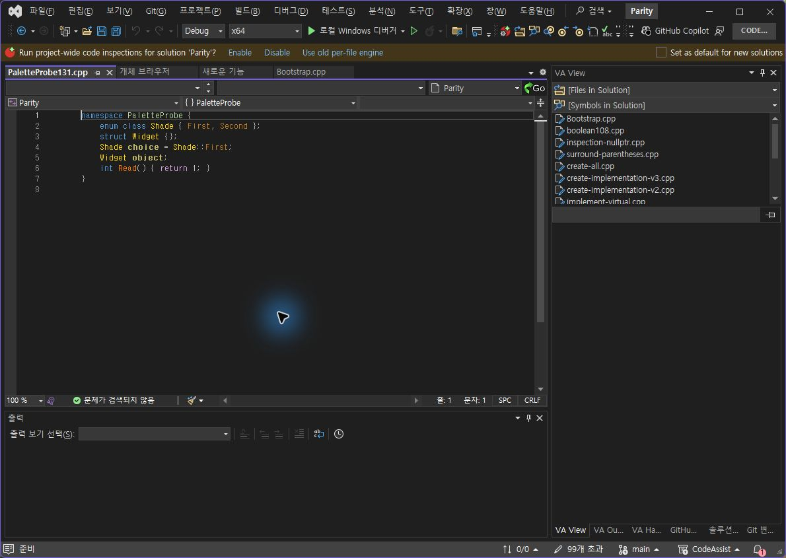
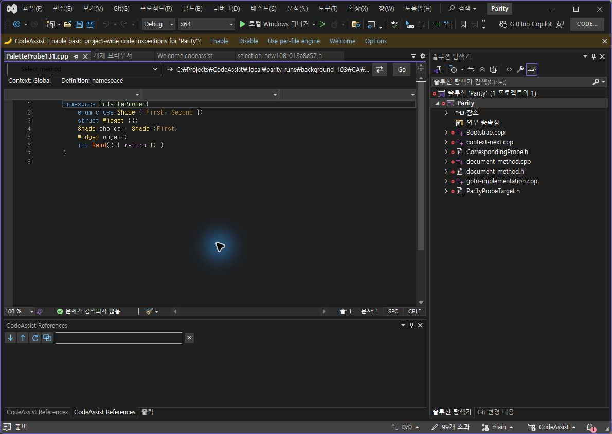

전체 완수 아님. 자동 회귀 통과를 VA 동등성 통과로 계산하지 않았습니다.
개체 브라우저의 LiteTreeView32 색상 적용 실패는 남아 있습니다. 표준 TreeView 클래스명만 바꾸어 해결된 것으로 처리하지 않았습니다.
| 기준 | 결과 | 한계 |
|---|---|---|
| 현재 코어 자동 회귀 | 378/378 · 100% | VA 동기화율 아님 |
| 설치된 132 코어 실행 | 19/19 · 100% | 색상 계산·파서; 실제 VS 화면 입력 아님 |
| VS2019 / Modern 빌드 | 2/2 · 100% | 스레딩 분석 경고 존재; VS2019 실행 검증 아님 |
| 패키지·설치 파일 대조 | 6/6 바이너리 일치 | 실제 로드 모듈도 별도 확인 |
| 최근 옵션 VA 실제 대조 | 일치 1/12 · 8.33% | 130 보관 결과: 실패 1, 미검증 10. 132 새 통과 아님 |
| 동일 옵션 검사 진행률 | 2/12 · 16.67% | 일치율과 다름 |
| UI 항목 구비 | 32/32 · 100% | 130 표본; 레이아웃·디자인 점수 아님 |
| 문서 부분 명세 확보 | 108/108 · 100% | 전체 역분석·구현 완료 아님 |
| 전체 기능 완전 동등성 인증 | 0/108 · 0% | 구현률이 0%라는 뜻이 아님. 전체 제품 동기화율 미산출 |
네임스페이스·열거형의 켜짐 상태 참고입니다. 꺼짐 및 복원까지 확인한 증거가 아니므로 새 옵션 통과로 계산하지 않았습니다.


378개 회귀 검사 · 설치본 19개 검사 · 두 대상 빌드 · 패키지 · 설치 해시 · 실제 CLR 로드 · 집계 JSON·시간
설치 파일은 installers/0.0.132/에 보관합니다. 다른 창이 검사 화면을 가린 뒤에는 화면 입력을 수행하지 않았습니다. 관련 없는 창 화면은 이 보고서에 싣지 않았습니다.
XERJ: 사용 — 후보 검색 후 현재 소스 확인. REA: 설치본 해시가 일치하는 VA의 읽기 전용 Ghidra 분석 근거 확보.